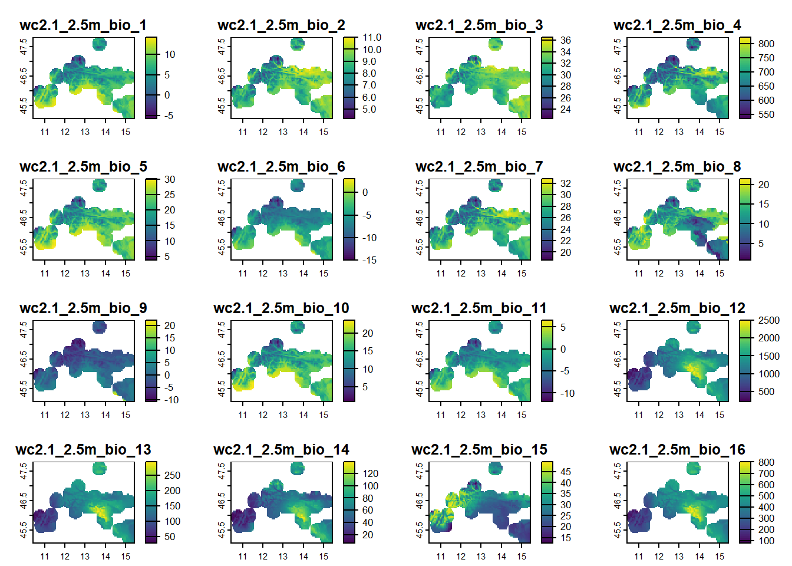

# Download Bioclim variables
# might take some time to download!!!
library(terra)
bioclim_data <- geodata::worldclim_global(var = "bio",
res = 2.5,
path = "01_data")
Summary
In this lab you will:
- use R code to access terrestrial environmental data from
WorldClimserver and download it, - create a map of environmental data,
- crop environmental data to the area of interest (buffer),
- assess correlations between environmental data for robust variable selection (Zuur et al., 2010),
- extract environmental data for each presence and pseudo-absence locations.
Before we start
Task
Open the folder
Introduction to species distribution models,Start RStudio from the
Rproject iconnamedIntroduction to species distribution models.Open the R script named
Erebia stirius.When following this lab, continue to copy & paste the code in the script so it is organised as it is in teaching materials.
Lab plan


Environmental data
“For use in a distribution model, it is usual to reformat all environmental data to a raster grid. … Formatting all data to the same raster grid ensures that environmental data are available for every cell in which biological data have been recorded. These cells, containing both biological data and environmental data, are used to build the species’ distribution model”. (Pearson, 2010)
Quick look at the raster data (in R)
There are three possible grid types in which raster files can be defined, of which squared grid is used most often.

Resolution or scale is a property of raster, that defines the size of the grid cells. At lower resolutions, cells are bigger and precision of the raster is lower. At higher resolutions the cells are smaller and the precision is higher. The choice of resolution depends on the size of the area of our research (global, regional, local), species or phenomenon in question (large scale migrations vs. endemic, restricted species) and availability of data. The common grid sizes available today go from 10 arc minutes (~20 km)(i.e. worldclim) to 30x30 meters (landsat).

Important consideration
What do we need to consider when we choose the grid of raster data for building species distribution models?
Rasters in R can be stored as:
- a single layer (
RasterLayer) - multi-layer raster brick - can only be linked to a single (multi-layer) file (
RasterBrick) - multi-layer raster stack - can be formed from separate files and/or from a few layers (‘bands’) from a single file (
RasterStack) - any of the above as
SpatRaster, “umbrella” data type in theterrapackage, which includes all the above data types from therasterpackage.
Present global environmental data
For this practice we will focus only on climatic data provided by WorldClim. WorldClim is a database of high spatial resolution global weather and climate data. These data can be used for mapping and spatial modeling. The data are provided for use in research and related activities.
WorldClim - contains climatic and bioclimatic variables for:
- present (resolution: 10 arc min; 5 min; 2.5 min; 30 arc-seconds = ~1 km)
- future - CMIP6 (we will use CMIP5) - (2050, 2070; resolution; 10 min; 5 min; 2,5 min; 30 arc-seconds = ~1 km)
- past (10 min; 5 min; 2.5 min)
- Mid Holocene (6 KY);
- LGM (22 KY);
- Last inter-glacial (120-140 thousand years)
- it provides also the global Digital elevation model.
Bioclimatic variables are derived from the monthly temperature and rainfall values in order to generate more biologically meaningful variables. These are often used in species distribution modeling and related ecological modeling techniques. These bioclimatic variables represent
- annual trends (e.g., mean annual temperature, annual precipitation),
- seasonality (e.g., annual range in temperature and precipitation) and
- extreme or limiting environmental factors (e.g., temperature of the coldest and warmest month, and precipitation of the wet and dry quarters).
The variables in worldclim dataset follow nomenclature BIO1, BIO2, …, to BIO19 and actual environmental variables behind these codes are:
- BIO1 = Annual Mean Temperature
- BIO2 = Mean Diurnal Range (Mean of monthly (max temp ‐ min temp))
- BIO3 = Isothermality (P2/P7) (* 100)
- BIO4 = Temperature Seasonality (standard deviation *100)
- BIO5 = Max Temperature of Warmest Month
- BIO6 = Min Temperature of Coldest Month
- BIO7 = Temperature Annual Range (P5‐P6)
- BIO8 = Mean Temperature of Wettest Quarter
- BIO9 = Mean Temperature of Driest Quarter
- BIO10 = Mean Temperature of Warmest Quarter
- BIO11 = Mean Temperature of Coldest Quarter
- BIO12 = Annual Precipitation
- BIO13 = Precipitation of Wettest Month
- BIO14 = Precipitation of Driest Month
- BIO15 = Precipitation Seasonality (Coefficient of Variation)
- BIO16 = Precipitation of Wettest Quarter
- BIO17 = Precipitation of Driest Quarter
- BIO18 = Precipitation of Warmest Quarter
- BIO19 = Precipitation of Coldest Quarter
We access and download global bioclimatic variables with function geodata() from terra package. We assign dowloaded data to bioclim_data object. We will download the data at spatial resolution of 2.5 degrees (~4.8 km; res =). With var = "bio" we define that we want to download bioclimatic variables dataset.
As this dataset is roughly 650 MB big, it might take a while to download.
The dataset is of class SpatRaster, as there were 19 separate layers downloaded to your hard-drive and assigned to a single object:
class(bioclim_data) ; names(bioclim_data)[1] "SpatRaster"
attr(,"package")
[1] "terra" [1] "wc2.1_2.5m_bio_1" "wc2.1_2.5m_bio_2" "wc2.1_2.5m_bio_3"
[4] "wc2.1_2.5m_bio_4" "wc2.1_2.5m_bio_5" "wc2.1_2.5m_bio_6"
[7] "wc2.1_2.5m_bio_7" "wc2.1_2.5m_bio_8" "wc2.1_2.5m_bio_9"
[10] "wc2.1_2.5m_bio_10" "wc2.1_2.5m_bio_11" "wc2.1_2.5m_bio_12"
[13] "wc2.1_2.5m_bio_13" "wc2.1_2.5m_bio_14" "wc2.1_2.5m_bio_15"
[16] "wc2.1_2.5m_bio_16" "wc2.1_2.5m_bio_17" "wc2.1_2.5m_bio_18"
[19] "wc2.1_2.5m_bio_19"The name of each variable starts with wc2.1_2.5m_ and ends with bio_x. The first part of the name tells us about the variable itself - wc2.1 means it come from WorldClim version 2.1 and 2.5m tells us it is in 2.5 arc minute resolution. The last part is the variable itself, bio for bioclimatic variables and x as the consecutive number of the variable in the list, going from 1 - 19.
We can simply visualise this data using the plot() function. As the terra package is loaded, it will know by default, that it needs to plot raster images and it will display all of the included layers (the default maximum is actually 16, so layers 17 - 19 are not displayed):
plot(bioclim_data) To visualize one layer from bioclim_data object we must use double square brackets [[]] with the number of the variable we want to extract (the variables BIO1 to BIO19 are arranged in increasing order from 1 - 19). If we use the number 19, we will plot the layer BIO19 = Precipitation of Coldest Quarter:
plot(bioclim_data[[19]])
Task
Change the number 19 in plot(bioclim_data[[19]]) and make individul plots for a couple of other bioclimatic variables. Consult the list above and try to understand how that variable is changing globally and why.
Cropping environmental layers to extents of species buffer
The stirius_buffer was created in Lab 1 and saved to stirius_buffer.RDS file in the 01_data folder of our project. Thus, we need to import it with readRDS() and reassign it to stirius_buffer object. As we will rely on terra throughout the lab, we will transform it straight away to SpatVector by terra:vect():
stirius_buffer <- terra::vect(readRDS("01_data/stirius_buffer.RDS"))Cropping is a bit complicated: we need to create a mask that will contain bioclim variables cropped or extracted from the entire bioclim_data only for the area of stirius_buffer. We do this with mask() function within which we set the cropped extent with crop() function - both are from raster package.
bioclim_stirius <- mask(crop(bioclim_data,
stirius_buffer),
stirius_buffer) Lets check what were the results of the code above, by plotting the cropped layers:
plot(bioclim_stirius)plot(bioclim_stirius[[19]])Variable selection: assessing correlations (collinearity) among environemntal variables
What is collinearity and why should we address it?
“If the underlying question in a study is which covariates are driving the response variable(s), then the biggest problem to overcome is often collinearity. Collinearity is the existence of correlation between covariates. Common examples are covariates like weight and length, or water depth and distance to the shoreline. If collinearity is ignored, one is likely to end up with a confusing statistical analysis in which nothing is significant, but where dropping one covariate can make the others significant, or even change the sign of estimated parameters.” (Zuur et al., 2010)
Collinearity of environmental variables (correlation between pairs of variables higher than |0.7|) can be a problem when fitting models. It means that we are adding redundant information to models that can obscure the actually important variables and their effects. To address collinearity in our initial set of predictors we will use the function removeCollinearity() from the package virtualspecies. This function:
- calculates the Pearson correlation factors between all pairs of variables (
method = "pearson"), - creates the distance matrix based on these values,
- plots the hierarchical cluster according to distances between variables (
plot = TRUE), - highlights the variables that are correlated at a specified threshold (
multicollinearity.cutoff = 0.7).
Our remaining task is to select one variable per each block (in red rectangles below), which will give us a subset of variables that are not strongly correlated.
Important consideration
This analysis provides us with statistical basis to reduce the number of variables that we will use for model building (Zuur et al., 2010; Irving et al., 2020). However, we need to use our knowledge on the ecology of our species of interest to select a final set of predictor variables that are not correlated and more importantly, that have biological/ecological meaning in explaining the distribution of selected species. We should be able to support the selection of our predictor variables with references or present good arguments for selecting each one.
install.packages("virtualspecies")virtualspecies::removeCollinearity(bioclim_stirius,
plot = TRUE,
multicollinearity.cutoff = 0.7,
method = "pearson")
[[1]]
[1] "wc2.1_2.5m_bio_1" "wc2.1_2.5m_bio_5" "wc2.1_2.5m_bio_6"
[4] "wc2.1_2.5m_bio_9" "wc2.1_2.5m_bio_10" "wc2.1_2.5m_bio_11"
[[2]]
[1] "wc2.1_2.5m_bio_2" "wc2.1_2.5m_bio_3"
[[3]]
[1] "wc2.1_2.5m_bio_4" "wc2.1_2.5m_bio_7"
[[4]]
[1] "wc2.1_2.5m_bio_8"
[[5]]
[1] "wc2.1_2.5m_bio_12" "wc2.1_2.5m_bio_13" "wc2.1_2.5m_bio_14"
[4] "wc2.1_2.5m_bio_16" "wc2.1_2.5m_bio_17" "wc2.1_2.5m_bio_19"
[[6]]
[1] "wc2.1_2.5m_bio_15"
[[7]]
[1] "wc2.1_2.5m_bio_18"Reminder:
Erebia stirius or Stirian ringlet: butterfly species, endemic to the area between the SE Alps and the N Dinaric Alps, where it inhabits grassy, rocky slopes, between 700 and 1800 m. Caterpillars feed mainly on the grass species Sesleria caerulea.
We note that there are three variables alone inside the red rectangle. These are not highly correlated to any other, and can be selected without any additional statistical consideration:
- BIO8 = Mean Temperature of Wettest Quarter
- BIO15 = Precipitation Seasonality
- BIO18 = Precipitation of Warmest Quarter
Our first decision is to select only one from the first big rectangle:
- BIO12 = Annual Precipitation
- BIO13 = Precipitation of Wettest Month
- BIO14 = Precipitation of Driest Month
- BIO16 = Precipitation of Wettest Quarter
- BIO17 = Precipitation of Driest Quarter (potentially influencing growth of grass species Sesleria caerulea?)
- BIO19 = Precipitation of Coldest Quarter
and to select only one from the second big rectangle:
- BIO1 = Annual Mean Temperature
- BIO5 = Max Temperature of Warmest Month
- BIO6 = Min Temperature of Coldest Month (potentially inhibiting species occupying higher altitudes?)
- BIO9 = Mean Temperature of Driest Quarter
- BIO10 = Mean Temperature of Warmest Quarter
- BIO11 = Mean Temperature of Coldest Quarter
And lastly between two pairs:
- BIO2 = Mean Diurnal Range (potentially influencing length of breeding season)
- BIO3 = Isothermality
and
- BIO4 = Temperature Seasonality (potentially influencing length of breeding season)
- BIO7 = Temperature Annual Range
When we have this final selection, we subset (retain) only the selected variables, that we will use for modelling.
bioclim_stirius <- subset(bioclim_stirius,
c("wc2.1_2.5m_bio_2",
"wc2.1_2.5m_bio_4",
"wc2.1_2.5m_bio_6",
"wc2.1_2.5m_bio_8",
"wc2.1_2.5m_bio_15",
"wc2.1_2.5m_bio_17",
"wc2.1_2.5m_bio_18"))
names(bioclim_stirius) [1] "wc2.1_2.5m_bio_2" "wc2.1_2.5m_bio_4" "wc2.1_2.5m_bio_6"
[4] "wc2.1_2.5m_bio_8" "wc2.1_2.5m_bio_15" "wc2.1_2.5m_bio_17"
[7] "wc2.1_2.5m_bio_18"Last step in the preparation of data is to extract the environmental values for each presence and pseudo-absence point (remember we stored them in stirius_pa.RDS in the first lab, with coordinates being in columns lon and lat. We extract values from raster files using extract() function. The first argument is the raster layer or layers, from which we want to extract. The second argument are the longitude and latitude coordinates of the points of interest. We will access them with dplyr::select() from stirius_pa. Extracted data will be stored temporarily in a new object stirius_pa_bioclim:
stirius_pa <- readRDS("01_data/stirius_pa.RDS")
stirius_pa_bioclim <- extract(
bioclim_stirius,
dplyr::select(stirius_pa, lon, lat)
)We will also apply drop_na() function to the dataset, to remove all the pseudo-absence points that might have been generated on the sea, lakes or rivers (having environmental data equal to NA:
library(dplyr)
stirius_pa_bioclim <- stirius_pa_bioclim %>%
tidyr::drop_na()Lastly, we will merge the environmental data with our presence - pseudo-absence dataset using cbind() function:
stirius_pa <- cbind(
stirius_pa,
stirius_pa_bioclim
)
head(stirius_pa) species lat lon presence ID wc2.1_2.5m_bio_2
1 Erebia parmenio 45.95096 11.44143 0 1 7.052333
2 Erebia parmenio 46.00191 14.06301 0 2 8.737666
3 Erebia parmenio 46.91182 12.49829 0 3 7.005333
4 Erebia parmenio 46.49978 13.67425 0 4 9.366000
5 Erebia parmenio 46.48025 12.94345 0 5 8.426000
6 Erebia parmenio 46.58441 14.02201 0 6 10.477333
wc2.1_2.5m_bio_4 wc2.1_2.5m_bio_6 wc2.1_2.5m_bio_8 wc2.1_2.5m_bio_15
1 650.0859 -5.364 13.902666 45.91653
2 701.4801 -5.088 4.383333 20.45457
3 620.9182 -9.740 8.678666 30.58824
4 692.6573 -7.992 5.906000 24.87869
5 646.9081 -6.872 13.117333 30.09015
6 791.2856 -6.952 17.753334 30.01317
wc2.1_2.5m_bio_17 wc2.1_2.5m_bio_18
1 65 232
2 408 495
3 212 469
4 262 478
5 200 447
6 168 374Export the data
We will export the final presence - pseudo absence dataframe, which now contains also the values at each location for associated environmental variables. We will export also the cropped environmental variables (bioclim_stirius), so they will be available to us in the following labs, when we will need it.
saveRDS(stirius_pa, "01_data/stirius_pa_final.RDS")
saveRDS(bioclim_stirius, "01_data/bioclim_stirius.RDS")Assignment
Task
Open R script that you named after the species you choose to work on.
Copy - paste
today'scode from theErebia stiriusscript to the end of your script.Adapt the code to achieve the following:
3.1) crop the global bioclim_data to the extent of your species buffer (you will need to import the buffer, if you saved it in the previous lab or rerun the code above, to create it again),
3.2) assess the collinearity between variables within the cropped area and select meaningful variables for further analysis,
3.3) extract values for each location of your presence-pseudo absence dataset (you will need to import the dataset, if you saved it in the previous lab or rerun the code above, to create it again),
3.4) export the final dataframe with extracted environmental data to the hard drive and also the cropped environmental variables,
3.5) save the script with the code for your species,
3.6) make sure that the project folder will be available to you next week at the labs (either store it on USB, cloud or similar, in case it gets deleted from computers).